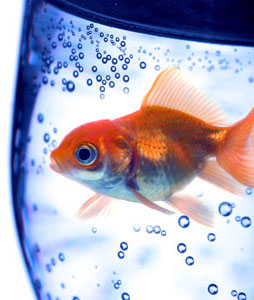

We treat your pets like our own
At Wisdom Pet Medicine, we strive to blend the best in traditional and alternative healing techniques to diagnose and treat companion animals, including dogs, cats, birds, reptiles, rodents, and fish.

Thanks for helping our German Shepherd
During the summer, my German Shorthair Pointer, Tonto, began to have severe redness and itching on his belly and feet. Through diagnostic testing, we learned that Tonto is severely allergic to over a dozen kinds of grass pollens.

Our diabetic kitty is better
When Samantha, our sweet kitten, began sleeping all the time and urinating excessively, we brought her to see the specialists at Wisdom. After running a blood test, Dr. Winthrop confirmed what we all feared – Samantha was showing signs of diabetes.
Our grape-loving dog
The staff at Wisdom worked tirelessly to determine why our three-year old bulldog, Roxie, started going into sudden kidney failure. They stabilized her and provided fluids until her kidneys were again functioning normal, but it was still a mystery as to what caused her health to decline so quickly.

A dog antibiotic cured our fish
Wisdom Pet Medicine is the only clinic around that will even book pet fish for appointments. When our 13-year old goldfish, McAllister, turned from silvery white to an angry red, we called around, urgently trying to find a veterinarian who could help. Wisdom not only got us in the same day, but also was able to diagnose McAllister as having a severe case of septicemia.